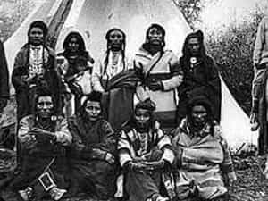

< < < Back
The Harem, The Tribe, And The Pride – Return Of Kings
“You can’t be one kind of man and another kind of president. You cannot separate the character of the president from the character of the presidency.”
I was a young man when George H.W. Bush spoke those words regarding Democratic nominee Bill Clinton in 1998. Growing up in a strong conservative family, this idea was not new to me – in fact, it was our mantra. The good man was a man of his word, dependable, honest and fair. The good man didn’t behave one way with some people and a different way with others.
I can’t even begin to count the number of times during the first 18 years of my life that my father would get upset with me for a devious action and say “Thatch, quote James 1:8 for me.”
“A double minded man is unstable in all of his ways.”
There’s something to be said for biblical wisdom, and there’s something to be said for our 41st president’s take on a man’s character. When two men, one who was Jesus’ brother and one who ascended to the most powerful office in the modern world have something to say, it’s probably worth a listen even if you don’t agree with them.
And I don’t. I don’t agree with them at all.
What worked for a guy born in 1924 and what worked for a guy who shared a childhood home with the Messiah doesn’t quite cut it in today’s world. Show me a man who is dependable, and I’ll show you a man who is predictable. Show me a man who is predictable, and I’ll show you a man who is used.
Trustworthiness, honor, love, and dependability are characteristics of the modern red pill man, as are shrewdness, viciousness, duplicity, judgment and perfidy. It is the double-minded man – the good and terrible man; the man who can be counted on for nothing and everything; the man of grace and wrath; the man arrogance and humble countenance – who survives and thrives in 2013.
Righteousness may have served our fathers and grandfathers well; traditional and dependable “good man” traits may have yielded them the love of a faithful wife and the respect of their children; dependability and honesty may have garnered them the loyalty of friends and the company they retired from; their uncompromising steadfastness to their principles may have solidified their legacy and caused their enemies to tremble with fear; but those days are gone.
The world has changed, and if we want what they had, we must change with change. If we want the same love, respect and admiration our forefathers enjoyed, we must adapt to our surroundings and meet new challenges in a new way.
Today’s beta male would have been a national treasure 50 years ago – a pillar of society and the backbone of the greatest nation on earth. But now he’s a mid-level manager living in a bachelor pad on the wrong side of the tracks, trying to scrape by on 26% of his earned income after taxes, alimony, and child support. He is a father without children, a provider without a wife, and a dickless wonder with mommy issues if he dares to question why. Every day he is inundated with social messages designed to make him feel like he isn’t doing his part. He is a rapist in waiting, a misogynist, a bigot, and a loser until he proves himself and is pardoned by a legion White Knights and their feminist dependents.
Enough already.
Put the Bible on the shelf where it belongs, bury Grandpa’s lessons in a plot right beside him, tell every little shit-mouthed college student feminist to burn in hell, and acknowledge that while all men are created equal, it’s where they go from there that should determine how you deal with them.
Every man reading this article should ruthlessly judge every human being he knows, label them, and divide them into three distinct groups: The harem, the tribe and the pride.
The Harem
Anything goes. These are the women who serve as your playthings. There is no honor, loyalty, or trust among any members of the harem. It is a loosely managed and dynamic group designed to yield as much pleasure for as little investment as possible. Lie to them, lead them on, waste their time, tease them, fuck them good, be good to them when they serve your purpose and give them the drama they crave when they don’t – and they’ll love you for it.
To disagree with that last statement is to out yourself as a woman or a man who’s never known one.
The Tribe

The tribe is comprised of those with whom you’ve formed a symbiotic relationship. This would include your LTR girlfriend, most of your friends, all of your acquaintances, your coworkers, and your boss. Here, honesty and integrity are tools to be used only when they meet one of two criteria: 1) They benefit you and the other party, or 2) They benefit you and not the other party.
The tribe can vote you off the reservation without reason or notice, so shrewdness is a must. Match kindness with kindness, but when there’s a conflict, never let your enemy live to fight another day. If your girlfriend crosses the line, show her the door and find her replacement. If a friend cockblocks you, delete his number and never speak him again. If a coworker criticizes you and interferes with your ability to earn a living, summon the demons of hell and ask their guidance on how to undermine his career and send him to the unemployment line.
The tribe must be a supportive culture, or else it has no value. Everyone in the tribe must pull his weight and contribute, and you must contribute to earn your place as well. Play fair in a fair game, cheat the cheaters, give only as good as you get, eschew loyalty and join a new tribe when it’s necessary for your survival, and apologize for nothing.
The Pride
The pride consists of those who look to you for leadership and protection and who deserve your leadership and protection. Depending on your situation, this may include your immediate family, your children, a good wife, and that very small group of friends you know for certain would have your back no matter what.
In the pride, there is forgiveness and understanding. In the pride, a man’s word is his bond. In the pride, a man makes sacrifices which are recognized and respected. The pride is fiercely defended and never compromised; a true inner sanctum and Holy of Holies where a man communes with his family. Everything that is good for the man is good for the pride, and everything that is good for the pride is good for the man. All blessings and all worthwhile sacrifice comes from the pride.
There is not one social problem that befalls modern man that cannot be attributed in some way to his inability to discern who belongs in the harem, who belongs in the tribe, and who belongs in the pride.
Someone reading this article has a good wife in his tribe when she belongs in his pride.
Someone reading this article has a girlfriend in his pride when she belongs in his tribe.
Someone reading this article has a little slut in his tribe or pride when she belongs in his harem.
Judge ruthlessly, audit continually, and reassign people to one of the three groups when circumstances dictate. Slap a big label on everyone you meet – basically do the total opposite of what feminist society and manginas tell you to do. Their goal is for you to never learn lessons so that you’ll meet each and every one of them with an open mind, open heart, open arms, and an open wallet. They cannot perform their parasitic function without a willful host, and any rational thought you put in to managing your own life or determining who should benefit from your efforts is a tremendous threat to their social machine.
Say no without apology, push back without reservation, and determine for yourself who belongs in your harem, your tribe and your pride.
Read More: The Physical Decline Of Modern Men


{kind=link}